概要
轻量化和高刚性车身
采用了热压钢板、高强度钢板、超高强度钢板和大量铝制零部件，减轻了重量并确保了钢性，同时优化了车架接合结构和加强梁的位置。
安全特性
车身结构可将能量分散至多个横梁以增强碰撞能量的吸收能力，高强度车架可控制车厢变形并有助于确保充足的生存空间。
考虑到行人保护性能，采用了碰撞能量吸收结构。
防锈车身
由于大量使用防腐蚀钢板并进行了防腐蚀处理（包括使用防锈蜡、密封胶、防裂油漆处理车门槛板等易腐蚀部位），提高了防锈性能。
低振动、低噪音车身
减振及噪音抑制材料的有效应用减小了发动机噪音、风噪和路噪。
通过将支架和加强件连接到车身面板上，减轻了面板振动。改变了车身面板的结构，从而减轻了面板振动。采用了可减少车身面板框架移动的车身结构，确保了较低的噪音等级。
空气动力学性能
调平车身前柱与挡风玻璃的接触面并使车门、前和后保险杠周围形状平滑，对于减少气流分离非常有效。
地板下方安装了多种导流零件以控制气流，并装有底罩以使车身下方区域平整，从而确保了出色的空气动力性能。
主要特征
外饰设计理念
技术 - 可靠性反映目的和性能
美感 - 愉悦传达高精准度和柔和轮廓
设计说明：侧面
根据新的 TNGA 平台，前围、腰线、后底板和前照灯/尾灯的总体高度和关键部位均有所降低。整体车身重量的减轻产生了灵敏的低重力能量，打造出柔和的轮廓。
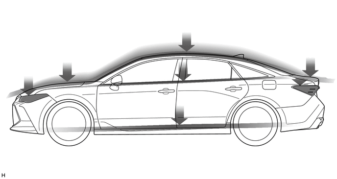
因其延伸至后部的柔美线条，高科技的前表面极尽体现了设计主题“助力燃烧器”。
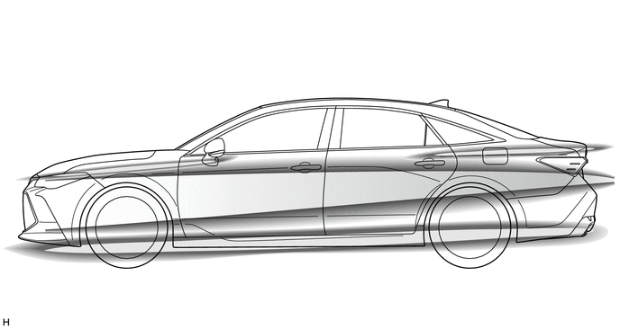
通过向后扩大车厢同时将后部乘员处的轮廓峰向后拉，用美学方式实现了柔和的空间感。形成了比当前车型更有力的轮廓，同时加大了内部空间。
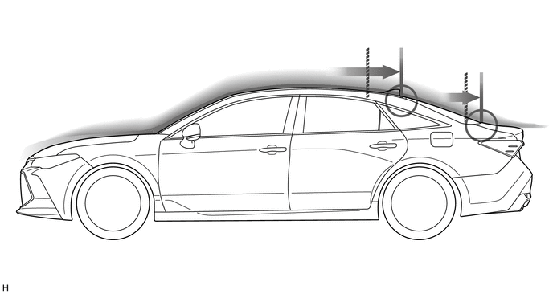
大幅拉伸 DLO 和包覆背窗玻璃，形成了独特的倒锥角窗柱，用空间感将车厢提升。
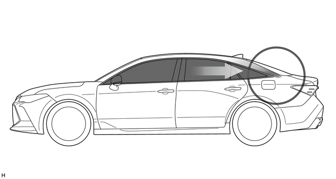
设计说明：前部
狭长的前照灯结构突显先进技术，上下格栅相映体现卓越性能。这些元素强化了技术概念，引领了后续车型“下部优先”的丰田品牌标识。
下部优先：前部设计改善下格栅，这样设计考虑了空气动力学性能、冷却性能且提高了对行人的保护。
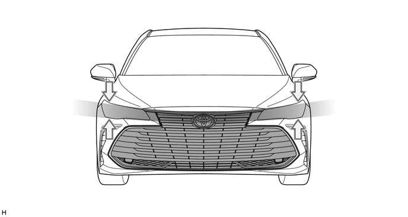
为通过精准提升高端形象，前格栅形状不仅仅是平面图像，而是由交叉的 3D 表面构成的。
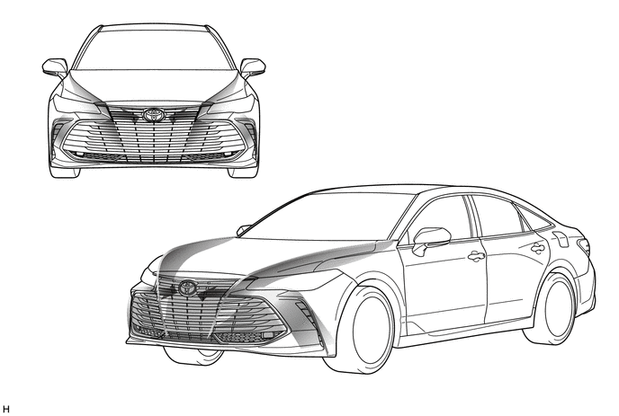
3D 格栅形成了前侧进气口。这种功能性设计方法是“技术美感”主题优美姿态的核心。
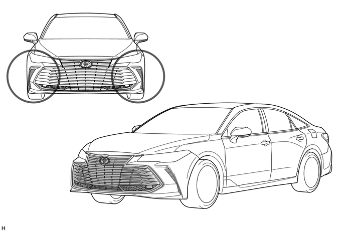
前侧进气口的功能设计改善了气流形象，勾勒出车身侧“紧凑技术”表面。
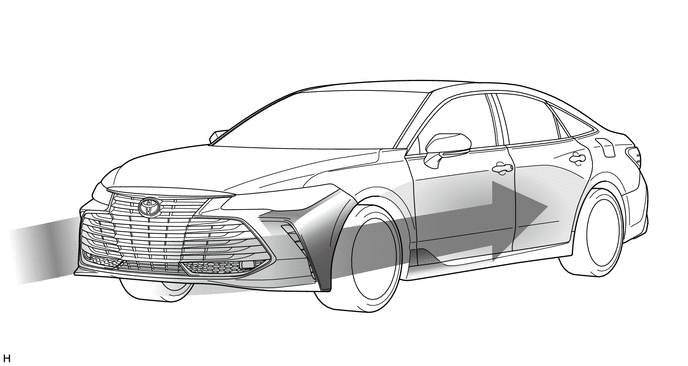
设计说明：后部
精致简单的结构与整洁的保险杠表面相接，给人以宽距感和雕刻般的上表面，彰显出十足的现代设计感。
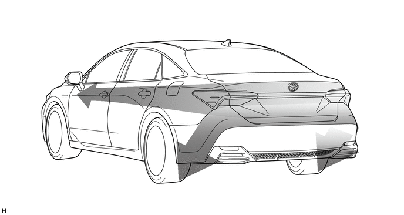
尾灯相连，带给人以优雅的现代视觉，同时宽敞的下部设计运动感十足。
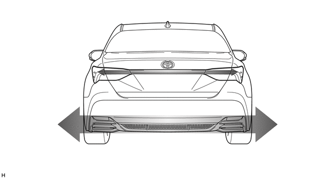
设计说明：前照灯和尾灯
所有级别的 LED 功能都具有独特的模块化设计边框。
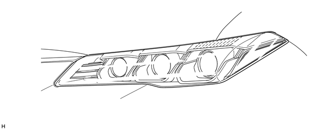
尾灯设计采用喷气战机导流翼般的 3D 形状，突显了技术美感。
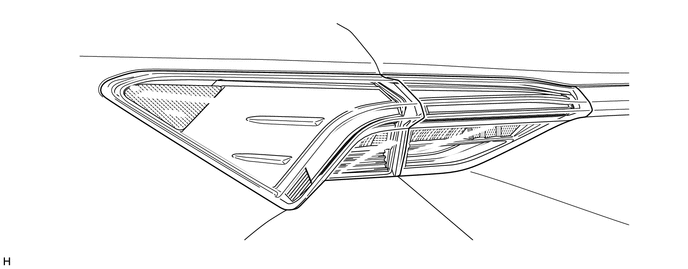